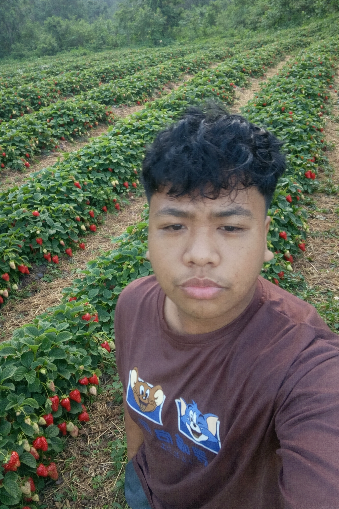
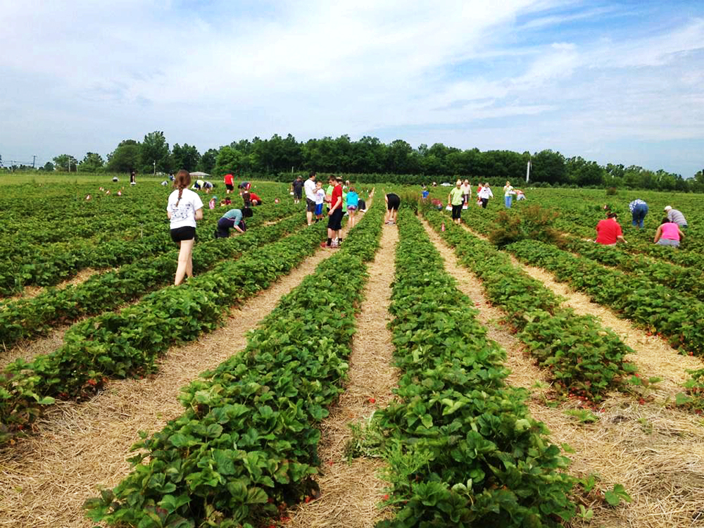
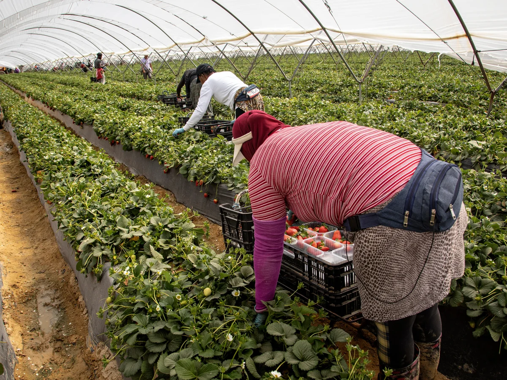
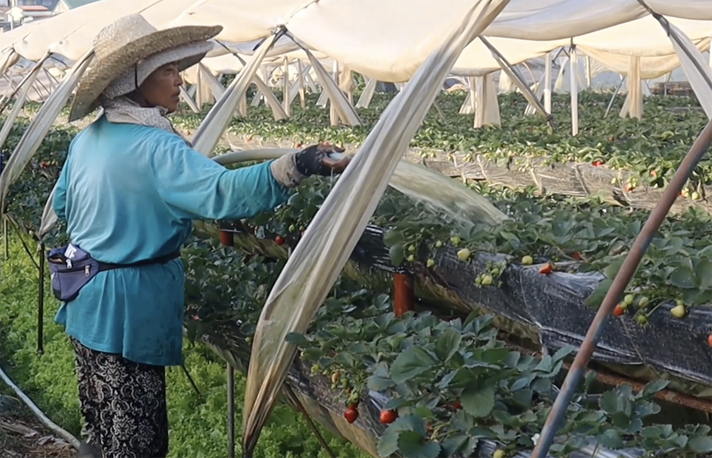
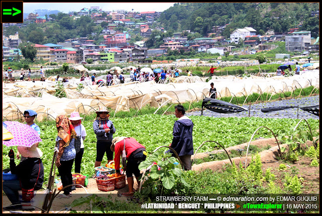
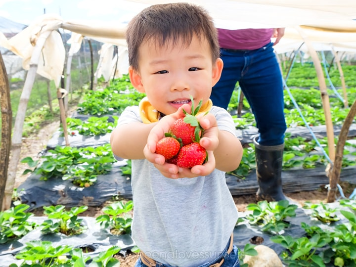
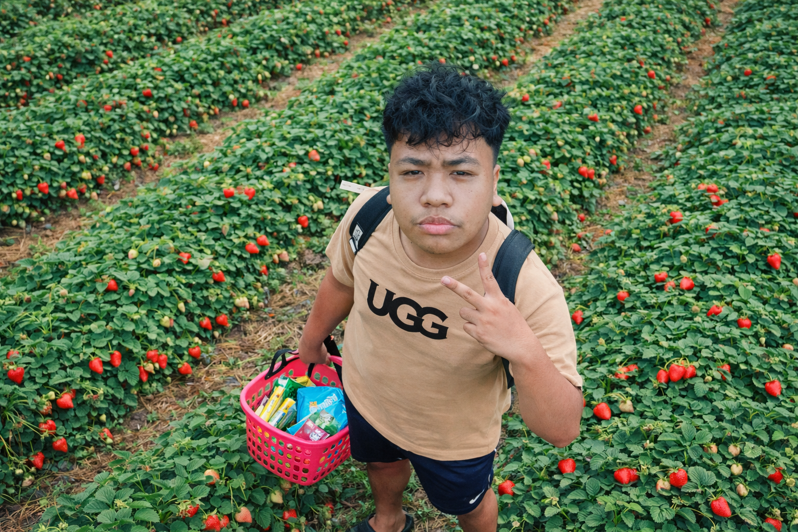

The strawberries we use in our product come from natural strawberry picking and are picked by our farmers manually to ensure the quality of every strawberry we use per product. We ensure that our strawberries are healthy and don't use any chemicals to kill unwanted pests to eat or make our strawberries not fresh. Our company specializes in creating a wide range of strawberry products, from freshly harvested fruits to jams, desserts, beverages, and other innovative treats. We take pride in ensuring that every strawberry used in our production is carefully selected for its freshness, flavor, and quality. By working closely with local farmers, we not only guarantee premium ingredients but also support sustainable agriculture and local livelihoods. In every jar, every bottle, and every fresh strawberry we offer, there is a story of care, dedication, and passion. Strawberry Factory is not just a business it is a community, a family, and a shared dream of bringing sweetness into the lives of others. Behind the success of Strawberry Factory is a team of hardworking and passionate individuals. We are a group of innovators, creators, and problem-solvers who share a common goal of excellence. Each member of our team contributes unique skills and ideas, allowing us to grow, adapt, and remain competitive in a constantly changing market. We also value responsibility and sustainability. Our company is committed to reducing waste, using eco-friendly packaging, and supporting environmentally conscious practices. We believe that as a business, we have a duty not only to our customers but also to the planet.